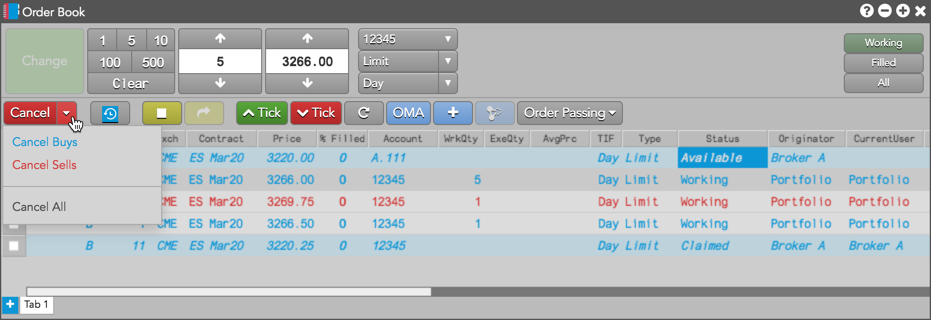

To delete working orders, select the orders you want to delete and click .
You can also delete all of your working orders (or all Buys or Sells) with the Cancel menu or the button, which can be shown on the Order Toolbar. As a precaution, you are asked to confirm that you want to delete all the selected orders.

If you do not want to confirm order cancellations, you can disable the confirmation by unchecking the Preferences | Orders | Cancel selected orders or Cancel All from Order Book option.
{% include ob-force-cancel.html %}